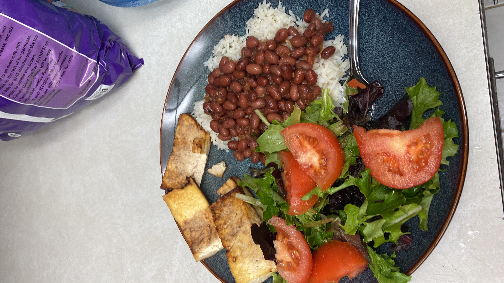

Colombian Red Beans

Colombian red beans served white rice, chicharron tofu and salad.
Ingredients
- 2 Goya Small Red Bean Cans
- 2 Tomatoes
- 1/3 Sweet Onion
- One and half table spoon Salt
A very homey recipe no matter where you are in the world. You will need a deep pot because this recipe
has a lot of liquid. You can choose to eat the beans as a soup or on top of other dryer foods, which provides
flexibility at the time of serving.
Steps
- Pour the 2 cans of small red beans into your cooking pot
- Place pot on stove and set temperature to medium
- Place the tomatoes and onion, along with the salt into a blender and mix well
- Pour contents from blender into the pot and stir
- Place lid over the pot but don't cover the whole pot, let cook for 10 mins
- Reduce temperature to a simmer and cover the pot, let cook for an additional 5 mins
- Enjoy your beans!
Home